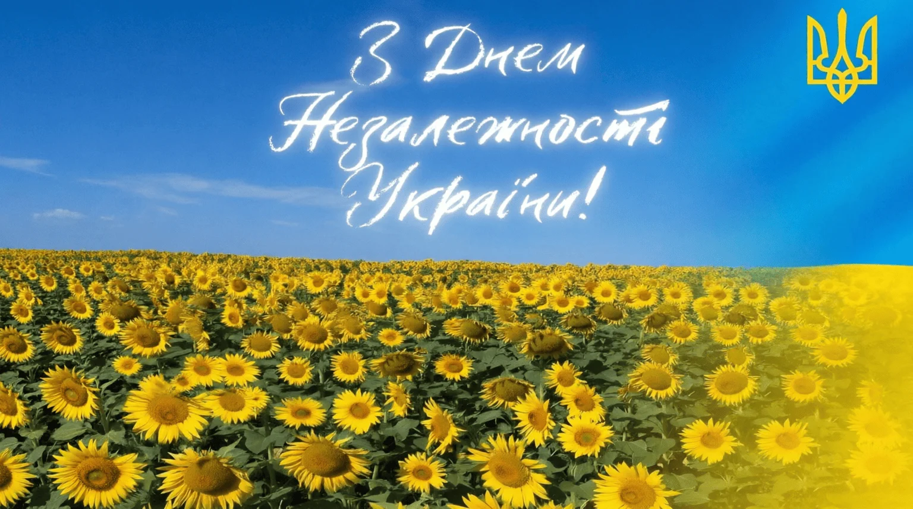
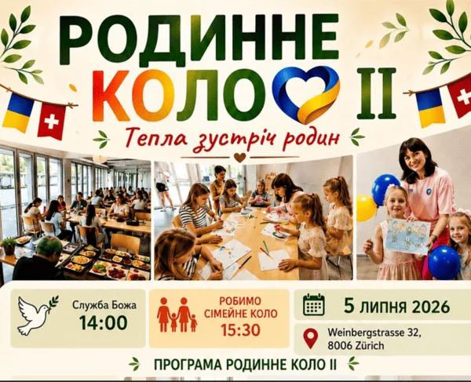
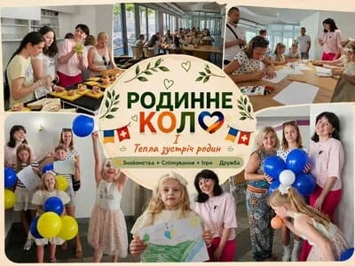
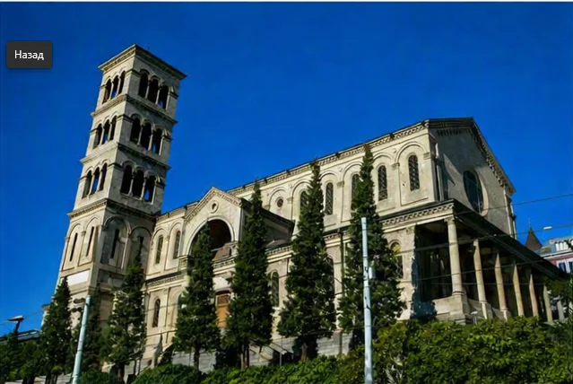
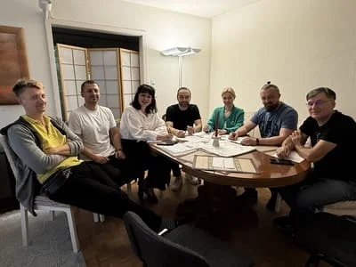

Нова громадська організація UAGZ у Цюриху
У Цюриху розпочала свою діяльність нова громадська організація UAGZ — Український інтеграційний та громадський центр Цюриха.
Мета організації — об’єднувати людей, надавати можливості для працевлаштування та спільно реалізовувати проекти у сфері освіти, сімейного розвитку, культури, спорту та суспільних ініціатив.
Першими напрямками роботи Організації стануть програми підтримки сімей з дітьми, дитячі, освітні та розвивальні програми, зокрема спортивні гуртки, групи з танців, творчі заняття з малювання та акторської майстерності.
Також планується проведення активних заходів, культурних подій та створення можливостей для спілкування й інтеграції в спільноти Цюриха.
Окремим напрямком роботи Організації є волонтерська діяльність — реалізація суспільних ініціатив, екологічних проектів, організація заходів та розвиток співпраці з громадськими організаціями й державними установами Цюриха.
Ми вдячні всім, хто підтримав створення організації, та запрошуємо всіх активних людей і сім’ї з дітьми долучатися до програм UAGZ.
Приходьте до нас, беріть участь у реалізації спільних ініціатив, долучайтеся до активу Організації та приносьте свої ідеї.
Разом ми зможемо створити більше можливостей для українців та зробити вагомий внесок у розвиток спільноти Цюриха.
Наші події




